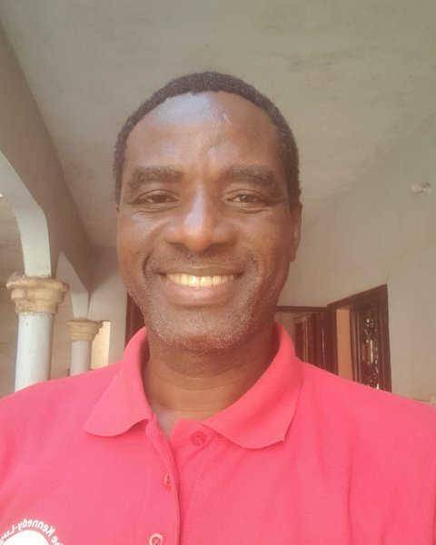

INSTITUT CULTUREL DU MALILONNIYA GUÈNDÈ

"Knowledge is a heritage, but also a responsibility toward future generations."
Welcome to the website of the Institut Culturel du Mali – LONNIYA GUÈNDÉ (ICM).
ICM was born of a simple but deep conviction: Africa possesses a history, civilizations, languages, sciences, systems of thought and bodies of knowledge that deserve to be further studied, documented, valued and transmitted.
Our ambition is to help make knowledge of African heritage a genuine driver of understanding, education, dialogue, creativity and development.
Through its activities in research, documentation, training, publishing, conferences, exhibitions, and cultural and scientific programs, ICM aims to create a space where researchers, academics, holders of traditional knowledge, artists, educators, young people and development actors can meet, exchange and build together.
Our approach is not only about looking at the past. It aims to understand the past in order to better illuminate the present and prepare the future. In particular, we want to contribute to passing African knowledge on to new generations, using contemporary tools from digital technology, artificial intelligence and scientific documentation, while respecting the integrity, intellectual property and sovereignty of African cultural data.
Mali holds a special place in this endeavor. A land of civilizations, manuscripts, scientific traditions, languages, music, oral literature, craftsmanship and great intellectual traditions, our country holds an exceptional heritage that deserves to be better known in Mali, in Africa and around the world.
It is in this spirit that ICM is preparing the International Congress on African Antiquity and its Influence on the World, scheduled to take place in Bamako from November 16 to 20, 2027. This gathering will bring together researchers, institutions, intellectuals, knowledge holders, young people and partners for a scientific and cultural reflection on Africa's contributions to the history of humanity.
Sounkalo Dembélé
Director General – Institut Culturel du Mali (ICM) – Lonniya Guèndè
The Institut Culturel du Mali (ICM) is an institution dedicated to the knowledge, research, promotion and transmission of the cultural, linguistic, historical and scientific heritage of Mali and Africa.
ICM works to create a space of dialogue between ancient heritage and contemporary knowledge, contributing to human, scientific and cultural development.
To make knowledge a tool for transmission, development and the international standing of Africa.
Like a door opening onto a space of knowledge, ICM aims to open the doors of our heritage, our history and our knowledge to Mali, to Africa and to the world.